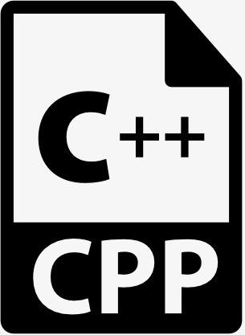

Research Interests
- Computer Algebra
- Symbolic-Numeric Computation
- Computational Number Theory
- Lattice-based Cryptography
- Homomorphic Encryption
- Privacy-preserving Computation
- Symbolic-Numeric Computation
Publications (see also at Google Scholar)
Copyright Notice: All of the following material are for non-commercial use only except that a specific permission is authorized from the author(s) or the corresponding copyright holder !!!
Selected publications
- Qiang He, Jingwei Chen, Wenyuan Wu, and Yong Feng. Efficient Privacy-Preserving LSTM Inference on Encrypted Sequential Data. Neurocomputing, 134508, 2026. DOIPDF
- Jingwei Chen, Linhan Yang, Wenyuan Wu, Yang Liu, and Yong Feng. Homomorphic matrix operations under bicyclic encoding. IEEE Transactions on Information Forensics and Security, 20: 1390-1404, 2025. ePrintDOISlidesPDF
- Jingwei Chen, Yong Feng, Yang Liu and Wenyuan Wu. On the probability of generating a primitive matrix. Journal of Systems Science and Complexity, 37(4):1755-1771, 2024. DOIarXivSlidesPDF
- 冯勇, 陈经纬. 零误差计算. 中国科学: 数学, 51(1):3-16, 2021. DOIPDF
- Yong Feng, Jingwei Chen, Wenyuan Wu. The PSLQ algorithm for empirical data. Mathematics of Computation, 88(317):1479-1501, 2019. DOIPDFarXiv
- Jingwei Chen, Damien Stehlé and Gilles Villard. Computing an LLL-reduced basis of the orthogonal lattice. In: ISSAC '18, pages 127-133. ACM, New York, 2018. DOIPDFarXivSlides
- Wenyuan Wu, Jingwei Chen, and Yong Feng. Sparse bivariate polynomial factorization. Science China Mathematics, 57(10):2123-2142, 2014. DOIPDF
- Jingwei Chen, Damien Stehlé and Gilles Villard. A new view on HJLS and PSLQ: Sums and projections of lattices. In Proc. ISSAC '13, pages 149-156. ACM, New York, 2013. DOIPDFSlides
Full publications
Qiang He, Jingwei Chen, Wenyuan Wu, and Yong Feng. Efficient Privacy-Preserving LSTM Inference on Encrypted Sequential Data. Neurocomputing, 134508, 2026.
Xiangyu Hu, Jingwei Chen, Wenyuan Wu, and Yong Feng. SecureHDC-FL: Addressing data heterogeneity in encrypted federated hyperdimensional computing. In: ICASSP '26, pages 5611-5615, IEEE, 2026.
Haonan Yuan, Wenyuan Wu and Jingwei Chen. Privacy-preserving, efficient and accurate dimensionality reduction. IEEE Transactions on Information Forensics and Security, 21:2191 - 2206, 2026.
Chen Yang, Jingwei Chen, Wenyuan Wu, and Yong Feng. Optimized privacy-preserving clustering with fully homomorphic encryption. In: SecureComm '24, LNICST 627, pages 76-96, Springer, Cham, 2026.
Yang Liu, Shuai Wang, Jingwei Chen, Wenyuan Wu, and Yong Feng. Efficient privacy-preserving linear system solving based on homomorphic encryption. In: ICAICE '25, pages 723-727, IEEE, 2025.
Xiaokang Dai, Jingwei Chen, Wenyuan Wu, and Yong Feng. Lattice-based, LWE-leakage model for Gaussian and uniform secret and its application in decentralization. Cybersecurity 8, 105:1-18, 2025.
Haonan Yuan, Wenyuan Wu, Jingwei Chen. SEF-UQR: Scalable and efficient privacy-preserving federated updating QR factorization. In: CIKM '25, pages 3983-3992, ACM, New York, 2025.
Jingwei Chen, Chen Yang, Yuwen Chen, Kunhua Zhong, Wenqiang Yang, Jiang Liu, Wenyuan Wu, and Bin Yi. Secure multicenter medical model inference from homomorphic encryption. In: ICIC 2025, LNCS 15868, pages 135-147, Springer, Singapore, 2025.
Jingwei Chen, Linhan Yang, Wenyuan Wu, Yang Liu, and Yong Feng. Homomorphic matrix operations under bicyclic encoding. IEEE Transactions on Information Forensics and Security, 20: 1390-1404, 2025. 
Yang Liu, Jiaojiao He, Jingwei Chen, Bo Mi, Ling Zhao, Xinyu Liu, Linhan Yang. Adaptive intelligent sensing control method for traffic lights under real-time vehicle conditions based on logic rules. KSII Transactions on Internet and Information Systems, 18(12): 3390-3413, 2024.
Jingwei Chen, Linhan Yang, Chen Yang, Shuai Wang, Rui Li, Weijie Miao, Wenyuan Wu, Li Yang, Kang Wu, and Lizhong Dai. Secure transformer-based neural network inference for protein sequence classification, 2024.
Jingwei Chen, Weijie Miao, Wenyuan Wu, Linhan Yang and Haonan Yuan. Secure relative detection in (forensic) database with homomorphic encryption. In: ISBRA '24, LNCS 14955, pages 410-422. Springer, Singapore, 2024.
Xiaokang Dai, Jingwei Chen, Wenyuan Wu, and Yong Feng. Lattice-based, more general anti-leakage model and its application in decentralization. In: ACISP '24, LNCS 14896, pages 44-63. Springer, Singapore, 2024.
张金斗, 陈经纬, 吴文渊, 冯勇. 基于同态加密的隐私保护主成分分析方法. 计算机科学, 51(8):387-395, 2024.
Jingwei Chen, Yong Feng, Yang Liu and Wenyuan Wu. On the probability of generating a primitive matrix. Journal of Systems Science and Complexity, 37(4):1755-1771, 2024.
刘洋, 杨林翰, 陈经纬, 吴文渊, 冯勇. 同态明文-密文矩阵运算及其应用. 通信学报, 45(2):150-161, 2024.
陆星缘, 陈经纬, 冯勇, 吴文渊. 基于同态加密的隐私保护数据分类协议. 计算机科学, 50(8): 321-332, 2023.
杨文强, 吴文渊, 陈经纬, 冯勇. 仿真系统中 DAE 求解技术现状. 包装工程, 48(8):18-27, 2022.
Jingwei Chen, Yong Feng, Yang Liu, Wenyuan Wu and Guanci Yang. Non-interactive privacy-preserving naive Bayes classifier using homomorphic encryption. In: SPNCE '21, pages 192-203. Springer, Cham, 2022.
冯勇, 陈经纬. 零误差计算. 中国科学: 数学, 51(1):3-16, 2021.
Yang Liu, Liyuan Huang and Jingwei Chen. Formal verification on the safety of internet of vehicles based on TPN and Z. Mathematical Problems in Engineering, 2020:6618168, 2020.
Yanan Bai, Xiaoyu Shi, Wenyuan Wu, Jingwei Chen, and Yong Feng. seIMC: A GSW-based secure and efficient integer matrix computation scheme with implementation. IEEE Access, 8(1):98383–98394, 2020.
刘洋, 陈经纬, 冯勇, 吴文渊. 并行 LLL 算法研究综述. 计算机工程与应用, 55(16):36-41, 2019.
Yong Feng, Jingwei Chen, Wenyuan Wu. The PSLQ algorithm for empirical data. Mathematics of Computation, 88(317):1479-1501, 2019.
Jingwei Chen, Damien Stehlé and Gilles Villard. Computing an LLL-reduced basis of the orthogonal lattice. In: ISSAC '18, pages 127-133. ACM, New York, 2018.
王永恒, 徐晨, 陈经纬, 吴文渊. 基于 HElib 的安全电子投票方案. 计算机应用研究, 34(7):2167-2171, 2017.
Jingwei Chen, Yong Feng, Yang Liu and Wenyuan Wu. Faster binary arithmetic operations on encrypted integers. In Y. Chen, editor, Proc. WCSE '17, Part III, pages 956-960. The Science and Engineering Institute, Rowland Heights, CA, 2017.
Jingwei Chen, Yong Feng, and Wenyuan Wu. Reducing lattice bases with Bergman exchange. In Y. Xiao and M. Ma, editors, Proc. ICCSN '17, Part II, pages 630-634. IEEE, Piscataway, 2017.
Chen Xu, Jingwei Chen, Wenyuan Wu, and Yong Feng. Homomorphically encrypted arithmetic operations over the integer ring. In F. Bao, et al., editors, Proc. ISPEC '16, LNCS 10060, pages 167-181. Springer, Cham, 2016.
Jingwei Chen, Yong Feng, Yang Liu, Bing Tang, and Wenyuan Wu. Sparse non-negative matrix factorization with generalized Kullback-Leibler divergence. In H. Yin, et al., editors, Proc. IDEAL '16, LNCS 9937, pages 353-360. Springer, Cham, 2016.
Yong Feng, Wenyuan Wu, Jingzhong Zhang, and Jingwei Chen. Exact bivariate polynomial factorization over ℚ by approximation of roots. Journal of Systems Science and Complexity, 28(1):243-260, 2015.
Wenyuan Wu, Jingwei Chen, and Yong Feng. Sparse bivariate polynomial factorization. Science China Mathematics, 57(10):2123-2142, 2014.
Yong Feng, Jingwei Chen, and Wenyuan Wu. Two variants of HJLS-PSLQ with applications. In Proc. SNC '14, pages 88-96. ACM, New York, 2014.
Jingwei Chen, Damien Stehlé and Gilles Villard. A new view on HJLS and PSLQ: Sums and projections of lattices. In Proc. ISSAC '13, pages 149-156. ACM, New York, 2013.
Yong Feng, Jingwei Chen, and Wenyuan Wu. Incremental PSLQ with application to algebraic number reconstruction. ACM Communications in Computer Algebra, 47(3):112-113, 2013. (ISSAC '13 poster)
Xiaolin Qin, Yong Feng, Jingwei Chen, and Jingzhong Zhang. Parallel compuatation of real solving bivariate polynomial systems by zero-matching method. Applied Mathematics and Computation, 219(14):7533-7541, 2013.
Wenyuan Wu, Jingwei Chen, and Yong Feng. An efficient algorithm to factorize sparse bivariate polynomials over the rationals. ACM Communications in Computer Algebra, 46(3):125-126, 2012. (ISSAC '12 poster)
Xiaolin Qin, Yong Feng, Jingwei Chen, and Jingzhong Zhang. A complete algorithm to find exact minimal polynomial by approximations. International Journal of Computer Mathematics, 89(17):2333-2344, 2012.
陈经纬, 冯勇, 秦小林, 张景中. 代数数极小多项式的近似重构. 系统科学与数学, 31(8):903-912, 2011.
陈经纬, 冯勇, 秦小林, 张景中. SIRD: 一个同步整数关系探测算法. 四川大学学报（工程科学版）, 43(6):127-132, 2011.
秦小林, 冯勇, 陈经纬, 李骏. 采用近似方法的实代数数准确表示及其应用. 四川大学学报（工程科学版）, 42(2):126-131, 2010.
Jingwei Chen, Yong Feng, Xiaolin Qin, and Jingzhong Zhang. Exact polynomial factorization by approximate high degree algebraic numbers. In Proc. SNC '09, pages 21-28. ACM, New York, 2009.
Xiaolin Qin, Yong Feng, Jingwei Chen, and Jingzhong Zhang. Finding exact minimal polynomial by approximations. In Proc. SNC '09, pages 125-131. ACM, New York, 2009.
陈经纬. 矩阵特征值的分布. 西南大学学报（自然科学版）, 29(11):45-47, 2007.
Here is my dissertation: 若干符号数值混合计算问题的理论和算法研究
Yang Liu, Jiaojiao He, Jingwei Chen, Bo Mi, Ling Zhao, Xinyu Liu, Linhan Yang. Adaptive intelligent sensing control method for traffic lights under real-time vehicle conditions based on logic rules. KSII Transactions on Internet and Information Systems, 18(12): 3390-3413, 2024.
Jingwei Chen, Linhan Yang, Chen Yang, Shuai Wang, Rui Li, Weijie Miao, Wenyuan Wu, Li Yang, Kang Wu, and Lizhong Dai. Secure transformer-based neural network inference for protein sequence classification, 2024.
Jingwei Chen, Weijie Miao, Wenyuan Wu, Linhan Yang and Haonan Yuan. Secure relative detection in (forensic) database with homomorphic encryption. In: ISBRA '24, LNCS 14955, pages 410-422. Springer, Singapore, 2024.
Xiaokang Dai, Jingwei Chen, Wenyuan Wu, and Yong Feng. Lattice-based, more general anti-leakage model and its application in decentralization. In: ACISP '24, LNCS 14896, pages 44-63. Springer, Singapore, 2024.
张金斗, 陈经纬, 吴文渊, 冯勇. 基于同态加密的隐私保护主成分分析方法. 计算机科学, 51(8):387-395, 2024.
Jingwei Chen, Yong Feng, Yang Liu and Wenyuan Wu. On the probability of generating a primitive matrix. Journal of Systems Science and Complexity, 37(4):1755-1771, 2024.
刘洋, 杨林翰, 陈经纬, 吴文渊, 冯勇. 同态明文-密文矩阵运算及其应用. 通信学报, 45(2):150-161, 2024.
陆星缘, 陈经纬, 冯勇, 吴文渊. 基于同态加密的隐私保护数据分类协议. 计算机科学, 50(8): 321-332, 2023.
杨文强, 吴文渊, 陈经纬, 冯勇. 仿真系统中 DAE 求解技术现状. 包装工程, 48(8):18-27, 2022.
Jingwei Chen, Yong Feng, Yang Liu, Wenyuan Wu and Guanci Yang. Non-interactive privacy-preserving naive Bayes classifier using homomorphic encryption. In: SPNCE '21, pages 192-203. Springer, Cham, 2022.
冯勇, 陈经纬. 零误差计算. 中国科学: 数学, 51(1):3-16, 2021.
Yang Liu, Liyuan Huang and Jingwei Chen. Formal verification on the safety of internet of vehicles based on TPN and Z. Mathematical Problems in Engineering, 2020:6618168, 2020.
Yanan Bai, Xiaoyu Shi, Wenyuan Wu, Jingwei Chen, and Yong Feng. seIMC: A GSW-based secure and efficient integer matrix computation scheme with implementation. IEEE Access, 8(1):98383–98394, 2020.
刘洋, 陈经纬, 冯勇, 吴文渊. 并行 LLL 算法研究综述. 计算机工程与应用, 55(16):36-41, 2019.
Yong Feng, Jingwei Chen, Wenyuan Wu. The PSLQ algorithm for empirical data. Mathematics of Computation, 88(317):1479-1501, 2019.
Jingwei Chen, Damien Stehlé and Gilles Villard. Computing an LLL-reduced basis of the orthogonal lattice. In: ISSAC '18, pages 127-133. ACM, New York, 2018.
王永恒, 徐晨, 陈经纬, 吴文渊. 基于 HElib 的安全电子投票方案. 计算机应用研究, 34(7):2167-2171, 2017.
Jingwei Chen, Yong Feng, Yang Liu and Wenyuan Wu. Faster binary arithmetic operations on encrypted integers. In Y. Chen, editor, Proc. WCSE '17, Part III, pages 956-960. The Science and Engineering Institute, Rowland Heights, CA, 2017.
Jingwei Chen, Yong Feng, and Wenyuan Wu. Reducing lattice bases with Bergman exchange. In Y. Xiao and M. Ma, editors, Proc. ICCSN '17, Part II, pages 630-634. IEEE, Piscataway, 2017.
Chen Xu, Jingwei Chen, Wenyuan Wu, and Yong Feng. Homomorphically encrypted arithmetic operations over the integer ring. In F. Bao, et al., editors, Proc. ISPEC '16, LNCS 10060, pages 167-181. Springer, Cham, 2016.

Students
Dongyang Zhang, CIGIT, CAS, Master, 2025-2028
Yi Yang, Chongqing University of Posts and Telecommunications, Master, 2024-2027
Qiang He, CIGIT, CAS, Master, 2024-2027
Shuai Wang, Chongqing Jiaotong University, Master, 2023-2026
Xiangyu Hu, CIGIT, CAS, 2023-2026
Linhan Yang, Chongqing Jiaotong University, Master, 2022-2025
Chen Yang, CIGIT, CAS, Master, 2022-2025
Jindou Zhang, CIGIT, CAS, Master, 2021-2024
Xingyuan Lu, Guizhou University, Master, 2020-2023